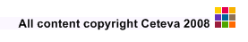

This document provides a definitive guide to the XMap language. XMap is a language for constructing mappings between models. Using XMap you can define mappings in a highly declarative way, enabling the essence of what the mapping does to be captured succinctly and precisely (as opposed to having to describe how the mapping is performed).
Here are some other benefits of XMap:
It enables system designers to realise a strong separation of concerns between mappings and the models that they relate. Aspects such as pretty printing do not need to be mixed with the detail of the mapping itself.
XMap can also make use of XOCL expressions to provide the extra expressiveness required to capture complex mappings
The XMap language is fully modelled. This means that mappings expressed in XMap can be easily transformed into other data formats.
